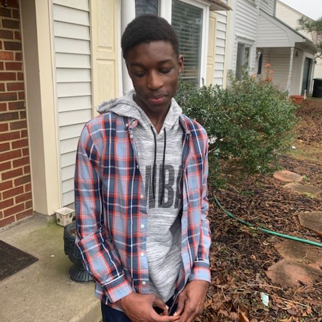

About Me
Here are the facts: I'm a 18-year-old and I'm currently in the 12th grade. Ever since I was little, I've always been fascinated by computers and how they work. I always get in trouble with it from being on it for too long, or playing games, or watching YouTube videos when I'm supposed to be studying or doing homework.
I’ve always been a sort of hacker, in both senses of the word, I guess – I like to dink around with computers and code, but I’m also always looking for new and better ways to do things. I’m absolutely obsessed with living my life to its fullest potential!
Throughout my life, I fortunately have had various experiences that have furthered my appreciation for computers and technology. I am a part of a program in my school district where I go on a college campus for half the school day to learn about topics such as PC and network troubleshooting, how to prevent social engineering attacks, cloud computing, and much more! In June 2022, I earned the CompTIA A+ certification; A highly sought globally recognized entry level IT certification.
I using this website as sort of a hub for my work as I intend to purse a career in cybersecurity in the future.
If you want to get in contact, you can hit me up on Instagram.
© 2022 Amal Djibo